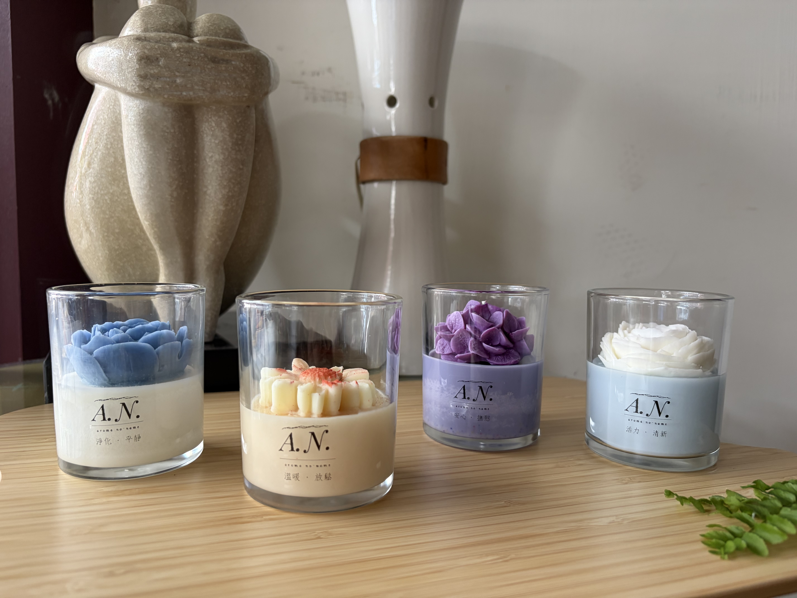
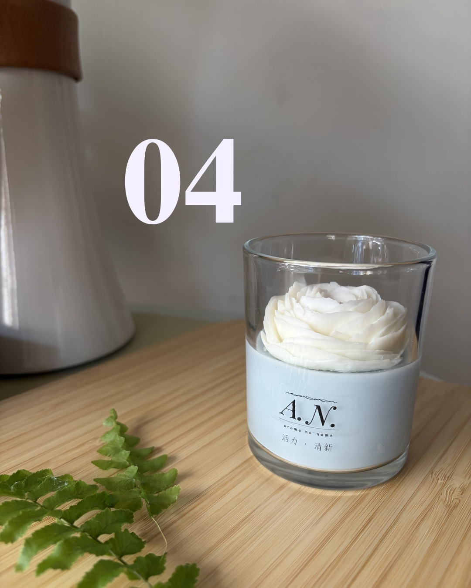
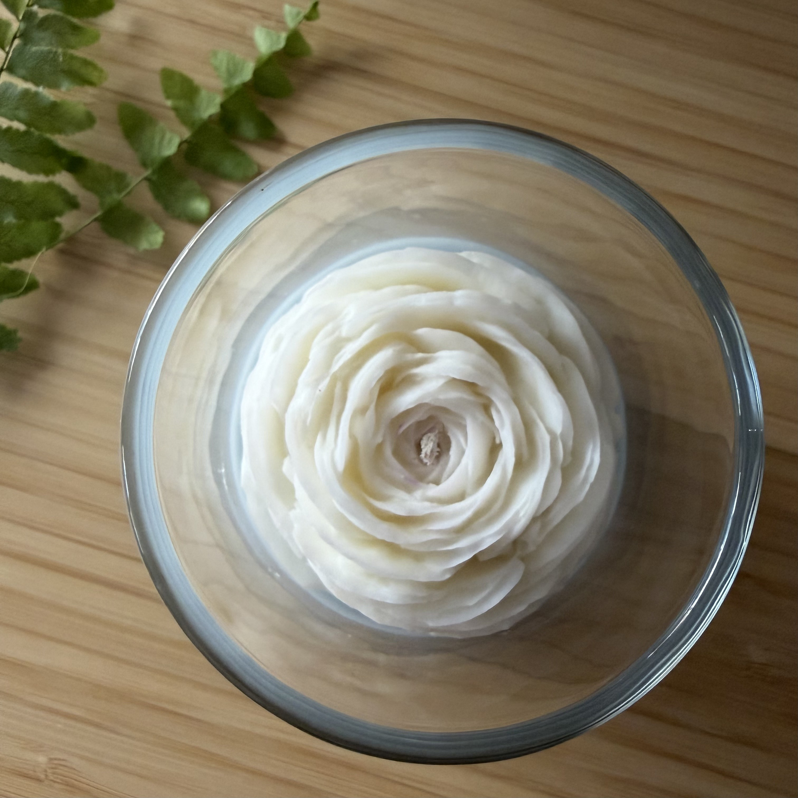
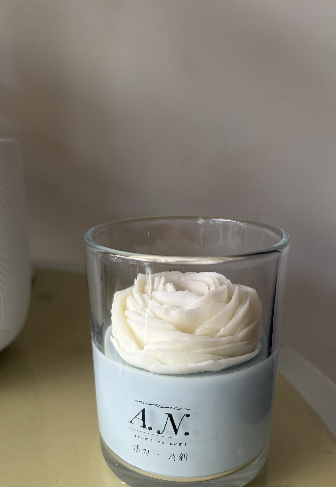

冬日的朝陽

聽聽看，它的聲音。
光來了。
Cold air, open eyes. A quiet kind of alive.
冬天的早晨，空氣是冷的，但光是乾淨的。睜開眼，世界很安靜，身體卻慢慢醒過來。不是熱鬧的那種有活力，是冷空氣裡那種清醒、輕盈、剛剛好的活著。

從一顆剛剝開的柳橙果香開始，中段轉進北歐森林的冷冽，最後落在木質沉穩的骨架裡。
果甜陽光 → 北歐冷冽 → 木質定香

表面的花是毛茛花。花瓣一層層往外舒展，明亮、有精神，像冬日朝陽那種不張揚、卻確實在發亮的清新。

適合早晨，或想把自己重新打開的時候。一天的開始、運動前、或需要一點清醒的午後。點燃後等十五到二十分鐘，香氣會慢慢鋪開，乾淨而醒神。